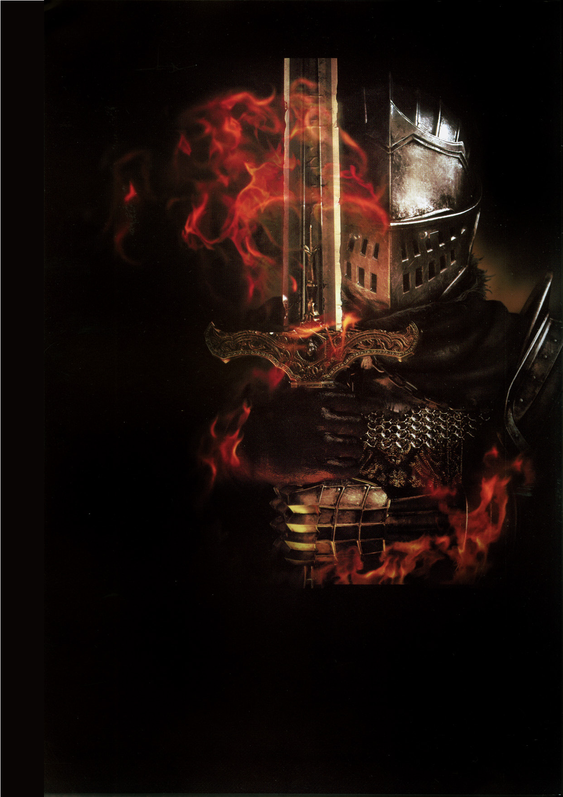
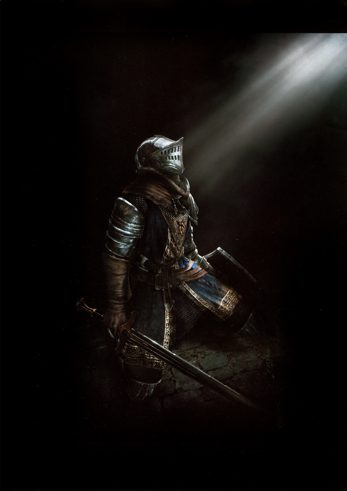
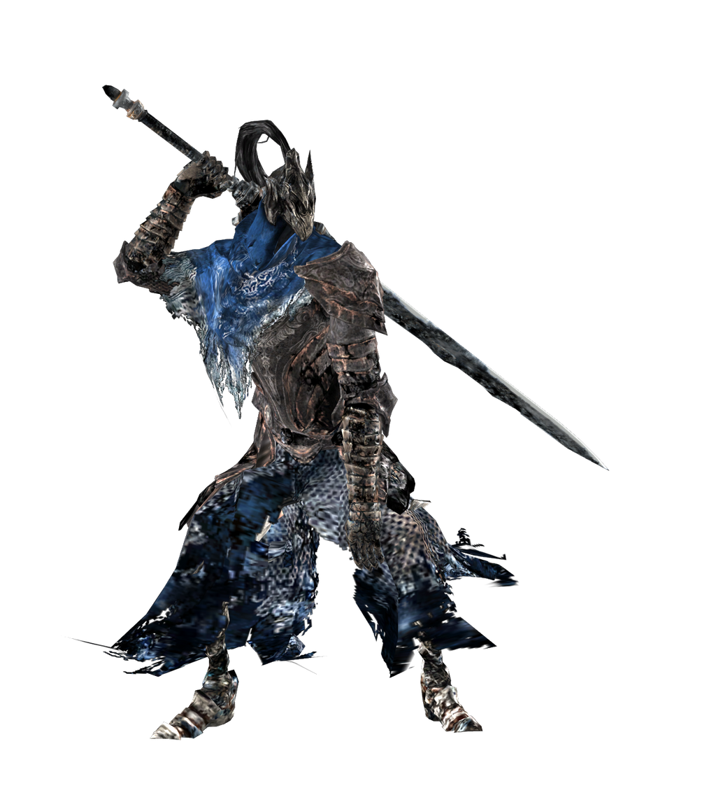

Sim, Dark Souls é um jogo difícil. Ele exige paciência, observação e aprendizado com o erro.
No entanto, a ideia de que ele é o ápice da dificuldade na história dos games é mais uma questão de marketing e timing do que de realidade.
Jogos punitivos não são novidade. Se voltarmos às décadas de 80 e 90, os fliperamas eram projetados especificamente para serem "injustos".
• Contra e Metal Slug: Um único erro significava game over.
• Ghosts 'n Goblins: Conhecido por ser muito mais frustrante que qualquer jogo da FromSoftware.
• Battletoads: Famoso por fases que exigiam reflexos sobre-humanos.
Naquela época, a dificuldade servia para um propósito comercial, fazer o jogador gastar mais fichas.
Então, por que Dark Souls ganhou esse título? O jogo foi lançado em uma época (2011) onde a indústria estava saturada de jogos extremamente fáceis, com regeneração automática de vida e tutoriais invasivos.
Quando os primeiros grandes influenciadores do YouTube começaram a gravar suas reações de frustração, a dificuldade se tornou o principal selo de marketing do jogo
O "Prepare to Die Edition" abraçou esse rótulo, transformando o desafio em um meme viral.
Diferente dos jogos de arcade que queriam seu dinheiro, Dark Souls é considerado justo por grande parte da comunidade.
O jogo não é difícil por ser aleatório, mas sim por punir a falta de atenção.
Uma vez que você aprende os padrões, a dificuldade desaparece, revelando um jogo de ritmo e estratégia.
E não se atreva a se tornar vazio.
Em 2009, o estúdio que existe desde a década de 1990 e era mais conhecido pela franquia Armored Core, chamou a atenção com Demon's Souls e mais ainda com Dark Souls dois anos depois. A partir daí, iniciava a era soulslike.
O gênero se baseia em quatro pilares principais:
• Dificuldade Elevada e Punitiva: Os inimigos são letais, e a morte é uma parte essencial do aprendizado.
• Risco e Recompensa: Quando você morre, perde sua "moeda" (experiência/dinheiro) no local da morte. Você tem apenas uma chance de voltar e recuperá-la, se morrer antes disso, perde tudo para sempre.
• Combate Estratégico: Não é sobre apertar botões aleatoriamente. O combate exige paciência, observação de padrões dos inimigos e gerenciamento de uma barra de stamina para atacar, esquivar ou defender.
• Exploração e Atalhos: O mundo costuma ser interconectado. Em vez de mapas cheios de ícones, você descobre o caminho e desbloqueia atalhos que ligam áreas distantes a um ponto de descanso central (como as "fogueiras").

"Verás mais adiante, um Abismo foi gerado da antiga besta, e ameaça engolir toda Oolacile. O Cavaleiro Artorias veio impedir isso, mas um herói assim não tem um murmúrio de Trevas. Sem dúvida, ele será engolido pelo Abismo, dominado por sua completa escuridão... De fato, o Abismo pode ser imparável..."
— Elizabeth
Ascensão e Glória
Artorias foi um dos quatro cavaleiros de elite do Lorde Gwyn. Conhecido por sua vontade indomável e habilidade com a espada grande, ele possuía um anel mágico (Anel do Lobo) e uma ligação profunda com Sif, uma grande loba cinzenta que lutava ao seu lado.
O Conflito em New Londo
Quando os Quatro Reis de New Londo foram corrompidos pelo Abismo, Artorias foi enviado para detê-los. Para sobreviver à escuridão, ele fez um pacto com as criaturas abissais, ganhando a habilidade de caminhar no vácuo (tornando-se o "Caminhante do Abismo"). Apesar de seus esforços, ele não conseguiu selar o local, e a cidade teve que ser inundada e sacrificada para conter o mal.
A Queda em Oolacile
Anos depois, o Abismo ressurgiu em Oolacile, provocado pelo despertar de Manus, o Pai do Abismo. Artorias partiu para enfrentar Manus, mas teve seu pingente de proteção roubado. Sem defesa contra a magia sombria, ele foi derrotado e ferido. Em seu último ato de lucidez, Artorias usou seu escudo mágico para criar uma barreira e salvar a vida de Sif, sacrificando-se no processo.
Morte e Legado
Corrompido e transformado em uma fera sem mente pelo Abismo, Artorias foi finalmente derrotado pelo Escolhido Morto-Vivo (o jogador), que viajou no tempo. Para preservar a honra do cavaleiro, a história oficial atribuiu a derrota de Manus a Artorias, escondendo sua queda trágica.
O Destino de Sif
Sif sobreviveu e passou séculos guardando o túmulo de seu mestre no Jardim da Raiz Sombria. Empunhando a espada de Artorias, a loba protegia o anel de seu companheiro, impedindo que outros mortos-vivos seguissem o mesmo caminho sombrio que destruiu o lendário cavaleiro.